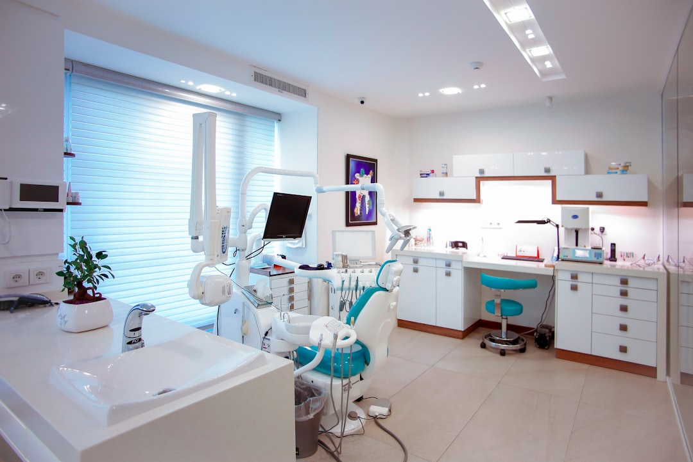

Come Gestire Chiamate e Urgenze 24/7 in Studi Dentistici con Dentis AI

Soluzioni Innovative per la Gestione Telefonica e delle Urgenze negli Studi Dentistici: L'Impatto di Dentis AI
- Le chiamate perse fuori orario e durante i weekend aumentano l’ansia dei pazienti e sovraccaricano lo staff.
- L’assenza di un servizio telefonico H24 porta a perdita di opportunità e peggioramento della fidelizzazione.
- Dentis AI con Serena, la receptionist vocale AI, garantisce risposta continua, gestione urgente e automazione integrata per studi odontoiatrici moderni.
Analisi Approfondita della Notizia e delle Implicazioni Operative
Nel settore odontoiatrico la gestione efficace delle comunicazioni con i pazienti rappresenta una sfida quotidiana e critica. Le chiamate perse soprattutto fuori orario d’ufficio e nei fine settimana comportano non solo disagi ai pazienti ma anche una perdita significativa di opportunità per lo studio dentistico stesso. L’impossibilità di rispondere tempestivamente può provocare ansia e frustrazione nei pazienti e mettere a rischio la loro fidelizzazione. Inoltre, con il personale che spesso deve affrontare picchi di chiamate e sovraccarichi di lavoro, la qualità del servizio può deteriorarsi rapidamente.
La notizia evidenzia questi problemi generalizzati, indicando che molti studi non dispongono di un sistema adeguato per una gestione telefonica continuativa e intelligente, né di strumenti efficaci per il triage delle emergenze odontoiatriche. Questo scenario operativo sottolinea l’urgenza di soluzioni innovative e tecnologicamente avanzate per mantenere alta la qualità dell’assistenza e migliorare la produttività degli studi dentistici.
Le Conseguenze e i Costi di Non Agire
La mancata ottimizzazione della gestione delle chiamate e della comunicazione con i pazienti può generare molteplici problemi operativi e finanziari. Le chiamate perse fuori orario e durante i giorni non lavorativi non sono semplici numeri: rappresentano pazienti potenzialmente insoddisfatti, preoccupati e inclini a rivolgersi altrove per le emergenze.
Inoltre, l’ansia accumulata dai pazienti nei weekend, quando non ricevono alcuna risposta, amplifica richieste urgenti durante l’orario di apertura, creando un effetto cascata che sovraccarica ulteriormente il personale di segreteria. Il risultato è un aumento dello stress lavorativo, errori di comunicazione, ritardi negli appuntamenti e insoddisfazione generale.
I costi per non agire si traducono in minore retention dei pazienti, perdita di opportunità commerciali, danni all’immagine dello studio e un ambiente lavorativo meno efficiente e più disorganizzato.
Come Dentis AI Risolve il Problema
Dentis AI si presenta come una risposta tecnologica concepita per modernizzare e ottimizzare completamente la gestione telefonica degli studi odontoiatrici, con un occhio di riguardo per le esigenze reali di pazienti e personale.
Alla base del SaaS c’è Serena, una receptionist telefonica vocale AI disponibile 24 ore su 24, 7 giorni su 7, capace di rispondere in modo empatico e professionale alle chiamate. Questo sistema non solo prende in carico le telefonate fuori orario, ma svolge un triage intelligente delle urgenze, differenziando tempestivamente i casi che necessitano di intervento immediato da quelli posticipabili.
Oltre alla gestione delle chiamate, Serena si integra perfettamente con Google Calendar dello studio dentistico, sincronizzando gli appuntamenti in tempo reale e migliorando la pianificazione. Inoltre, il SaaS invia promemoria WhatsApp automatici ai pazienti, riducendo le mancate presentazioni e migliorando la comunicazione diretta.
Con Dentis AI si riduce drasticamente il carico di lavoro della segretaria, che può così dedicarsi a compiti più strategici e meno ripetitivi. La soluzione assicura una presenza costante e rassicurante per i pazienti, incrementando la loro soddisfazione e fidelizzazione.
| Gestione Tradizionale | Con Dentis AI |
|---|---|
| Segreteria attiva solo in orario d’ufficio | Receptionist AI disponibile 24/7, nessuna chiamata persa |
| Gestione manuale delle urgenze, rischio errori | Triage automatico ed empatico delle emergenze odontoiatriche |
| Promemoria appuntamenti gestiti manualmente | Promemoria WhatsApp automatizzati e integrati con Google Calendar |
| Segretaria spesso sovraccarica con compiti ripetitivi | Alleggerimento del carico operazionale tramite automazione vocale AI |
| Rischio perdita pazienti insoddisfatti | Incremento fidelizzazione e miglior esperienza paziente |
💡 Ti è stato utile questo approfondimento?
Condividilo con un collega o un amico del settore Odontoiatri, Titolari di Studi Dentistici e Direttori Sanitari a cui potrebbe interessare!
FAQ - Domande Frequenti per Studi Dentistici su Dentis AI e la Gestione Telefonica
1. Come garantisce Serena, la receptionist AI, un’interazione empatica con i pazienti?
Serena è dotata di algoritmi avanzati di riconoscimento vocale e modulazione emotiva per rispondere con toni rassicuranti e professionali, replicando una reale interazione umana.
2. È possibile integrare Dentis AI con gli strumenti di gestione già in uso nello studio?
Sì, Dentis AI si integra nativamente con Google Calendar e può essere configurata per operare in sinergia con altri software gestionali tramite API dedicate.
3. Qual è il vantaggio competitivo nell’adottare Dentis AI rispetto all’assunzione di personale aggiuntivo?
Dentis AI fornisce una presenza costante e scalabile 24/7 senza costi aggiuntivi di personale, riducendo gli errori umani e migliorando l’efficienza operativa complessiva.
Inizia Subito
Prova Gratuita di 7 giorni senza carta di credito. Piano PRO a €149/mese.
Fonti Ufficiali e Risorse Esterne
Scopri l'Intelligenza Artificiale per la tua attività
Prova le soluzioni B2B di RM Studio e ottimizza le tue vendite.
Scopri Dentis AI